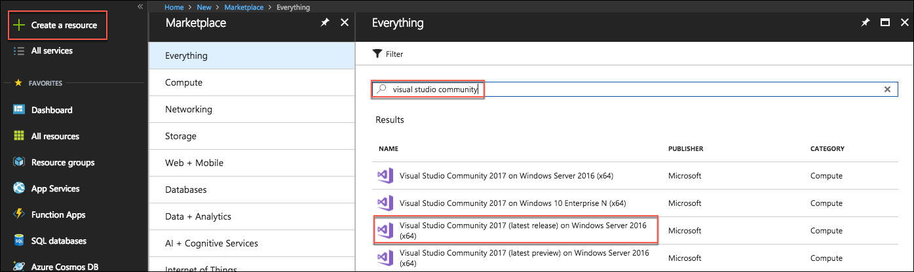

Microsoft Azure subscription must be pay-as-you-go or MSDN.
Trial subscriptions will not work.
A virtual machine configured with:
Visual Studio Community 2017 or later
Azure SDK 2.9 or later (Included with Visual Studio 2017)
Before the hands-on lab
Duration: 20 minutes
In this exercise, you will set up your environment for use in the rest of the hands-on lab. You should follow all the steps provided in the Before the hands-on lab section to prepare your environment before attending the hands-on lab.
Task 1: Provision a lab virtual machine (VM)
In this task, you will provision a virtual machine (VM) in Azure. The VM image used will have Visual Studio Community 2017 installed.
Launch a web browser, and navigate to the Azure Portal.
Select +Create a resource, then type “Visual Studio Community” into the search bar. Select Visual Studio Community 2017 (latest release) on Windows Server 2016 (x64) from the results. 
On the blade that comes up, ensure the deployment model is set to Resource Manager and select Create.
Resource Manager is listed below Select a deployment model, and the Create button appears below that.
Set the following configuration on the Basics tab.
Name: Enter LabVM.
VM disk type: Select SSD.
User name: Enter holuser
Password: Enter Password.1!!
Subscription: Select the subscription you are using for this lab.
Resource Group: Select Create new, and enter hands-on-labs for the resource group name.
Location: Select the region you are using for resources in this lab.
On the Basics tab, the values above are entered in the boxes.
Select OK to move to the next step.
On the Choose a size blade, ensure the Supported disk type is set to SSD, and select View all. This machine won’t be doing much heavy lifting, so selecting D2S_V3 Standard is a good baseline option.
In this screenshot of the Choose a size blade, SSD is highlighted under Supported disk type, View all is highlighted, and D2S_V3 Standard is highlighted.
Select Select to move on to the Settings blade.
Accept all the default values on the Settings blade, and select OK.
Select Create on the Create blade to provision the virtual machine.
In this screenshot of the Create blade, various information appears below Offer details, Summary, and Terms of use. A Create button appears at the bottom of the blade.
It may take 10+ minutes for the virtual machine to complete provisioning.
Task 2: Connect to your lab VM
In this step, you will open an RDP connection to your Lab VM, and disable Internet Explorer Enhanced Security Configuration.
Connect to the Lab VM. (If you are already connected to your Lab VM, skip to Step 7.)
From the left side menu in the Azure portal, select Resource groups, then enter your resource group name into the filter box, and select it from the list.
Resource groups is highlighted on the left side of the Azure portal, and at right, hands and hands-on-labs are highlighted.
Next, select your lab virtual machine, LabVM, from the list.
LabVM is highlighted in the Name list.
On your Lab VM blade, select Connect from the top menu.
Connect is highlighted at the top of the Lab VM blade.
Download and open the .RDP file.
Select Connect on the Remote Desktop Connection dialog.
Connect is selected and highlighted at the bottom of the Remote Desktop Connection dialog box.
Enter the following credentials (or the non-default credentials if you changed them):
User name: holuser
Password: Password.1!!
The information above is entered in the Windows Security dialog box.
Select Yes to connect, if prompted that the identity of the remote computer cannot be verified.
Yes is selected and highlighted at the bottom of the Remote Desktop Connection dialog box.
Once logged in, launch the Server Manager. This should start automatically, but you can access it via the Start menu if it does not start.
Select Local Server, the select On next to IE Enhanced Security Configuration.
Local Server is selected and highlighted on the left side of Server Manager, and at right, IE Enhanced Security Configuration On is highlighted under Properties For LabVM.
In the Internet Explorer Enhanced Security Configuration dialog, select Off under Administrators, then select OK.
Off is selected under Administrators in the Internet Explorer Enhanced Security Configuration dialog box.
Close the Server Manager.
You should follow all steps provided before attending the Hands-on lab.